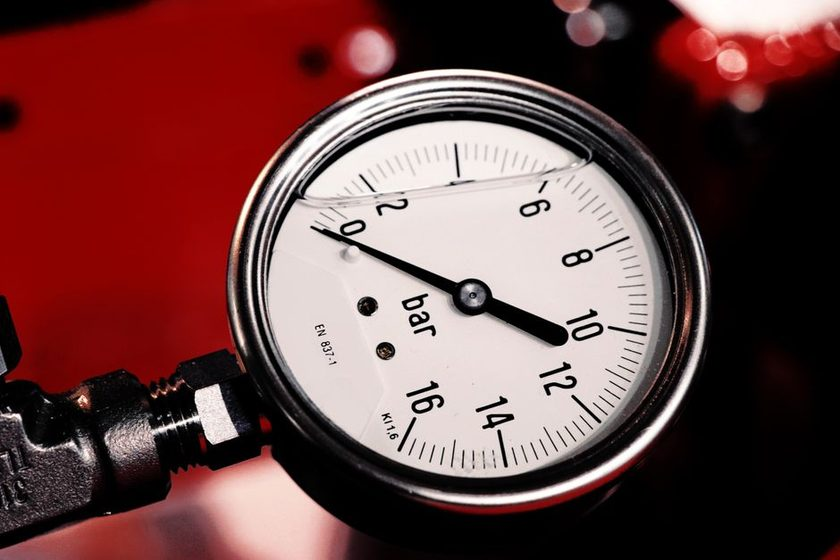

Calibrating a Home Barometer Without a Lab
A borrowed reference reading and a notebook are usually enough to start.

Every home barometer eventually says something different from the world around it. Mine drifted for the better part of a year before I noticed — not because the needle jumped, but because it quietly stopped matching what a neighbor's dial showed on the same still afternoon. There was no dropped instrument, no obvious cause, just a slow parting of ways between two readings that used to agree within a hair. Calibrating a barometer sounds like a job for a laboratory with a mercury column and a technician in a white coat, and for some instruments it still is. For the kind of dial or digital display most of us keep on a porch wall, though, a single trustworthy reference reading and a notebook will usually get the numbers back to something worth trusting.
Why Barometers Drift Without You Noticing
Aneroid mechanisms rely on a sealed metal capsule that flexes with pressure, and that capsule is under constant mechanical stress. Over months of expansion and contraction, the linkage between the capsule and the needle tends to lose a small amount of precision — not because anything breaks, but because metal behaves the way metal always does under repeated load. Digital sensors drift too, for their own reasons: temperature cycling, a slowly aging capacitive membrane, firmware that rounds differently than it did on day one. Neither failure looks dramatic. An instrument that reads a few units low doesn't jam or flash a warning. It just sits there, agreeing with itself every single day, which is exactly what makes the drift so easy to miss. I only caught mine by comparing two logs side by side, a habit picked up after running into the monthly average problem the year before, where a single misread day had been smoothed invisibly into a thirty-day mean.
Finding a Reference You Can Trust
The whole exercise depends on having one number you believe more than your own instrument, at one specific moment. The nearest airport tends to be the best free option, since aviation reporting requires pressure to be logged and sea-level corrected on a fixed schedule, and that data is public. A marine forecast station can work as well, if it's close enough that its weather hasn't diverged from yours in the time it takes to read both. What tends not to work is a phone weather app's current-conditions figure, which is often interpolated from a station miles away and can lag by an hour or more without saying so. Asking a neighbor who owns a barometer they trust has also served me well — not because their instrument is guaranteed accurate, but because comparing two imperfect readings against each other, over a few attempts, tends to reveal which one is the outlier.
| Source | Update frequency | Sea-level corrected | Access | Notes |
|---|---|---|---|---|
| Nearest airport station | Hourly | Yes | Public, online | Usually the steadiest free option |
| Marine or coastal station | Hourly or better | Sometimes | Public, online | Good if genuinely nearby |
| A neighbor's barometer | On demand | Depends on theirs | In person | Best for spotting relative drift |
| Phone weather app | Variable, often delayed | Usually | Instant | Convenient, least reliable for this |
| Mail-order precision barometer | On demand | Yes | Requires purchase | Most accurate, but adds cost |
The Two-Reading Method
The method itself is almost embarrassingly simple, and that's the point. Take your reading and the reference reading as close together in time as you can manage, ideally within five or ten minutes, write both down, and subtract. That difference is your offset — not a verdict on which instrument is "right." A few habits make the comparison meaningful instead of misleading:
- Match elevation first. A sea-level reference and a home barometer that hasn't been elevation-corrected will disagree by design, not by drift.
- Read at a calm moment. A passing front can move pressure fast enough that a five-minute gap matters.
- Repeat on a different day. One comparison shows the offset that day; three or four, spread out, show whether it's stable.
- Write the raw numbers, not just the difference. A recalculated offset later is only possible if the originals survive.
If the offset holds steady across several tries, most dial barometers have a small adjustment screw on the back that lets the needle be set to match — turned gently, in small increments, and checked again rather than trusted to land exactly right on the first turn.
Recording the Offset Instead of Chasing a Perfect Zero
It's tempting to treat calibration as a one-time fix: find the offset, adjust the screw, close the notebook. Across three years of keeping a log, the more useful habit has been writing the offset down as its own entry — date, reference source, and the number — even after the instrument is adjusted. An offset that's growing over time tells you something an offset that's merely present does not.
A barometer that's always a few units low is a nuisance. A barometer whose error changes size every few months is a different problem entirely, and the only way to see that shape is to have written each measurement down.
That second kind of drift is the one worth watching for, because it means the instrument's behavior itself is changing, not just its starting point.
When to Recheck, and When to Leave It Alone
Not every small disagreement deserves a screwdriver. Weather itself moves pressure by a wide margin across a single storm, so a one-off gap seen only once sits closer to reading noise than to genuine drift. Rechecking roughly once a season — not on a fixed date, but whenever a calm, clear morning lines up with a working reference — has been enough to catch the kind of slow drift described in the drift nobody notices until the second winter, without turning calibration into a weekly chore. Recalibrating more often than that mostly adds noise of its own, since every reference reading carries a small uncertainty of its own.
What Calibration Doesn't Fix
Bringing the needle back in line with a good reference solves for offset, not for every source of error. A barometer placed somewhere the wind gusts across the porch, or that sits in direct sun for part of the afternoon, will show real short-term jumps that no adjustment screw can smooth out — that's a placement problem, closer in kind to what shows up in screen placement and radiant error. A calibrated instrument in a poor spot is still just a well-adjusted proxy for the wrong microclimate. The two problems are worth solving in order: fix placement first, because moving the barometer resets its baseline enough to make any earlier calibration meaningless.